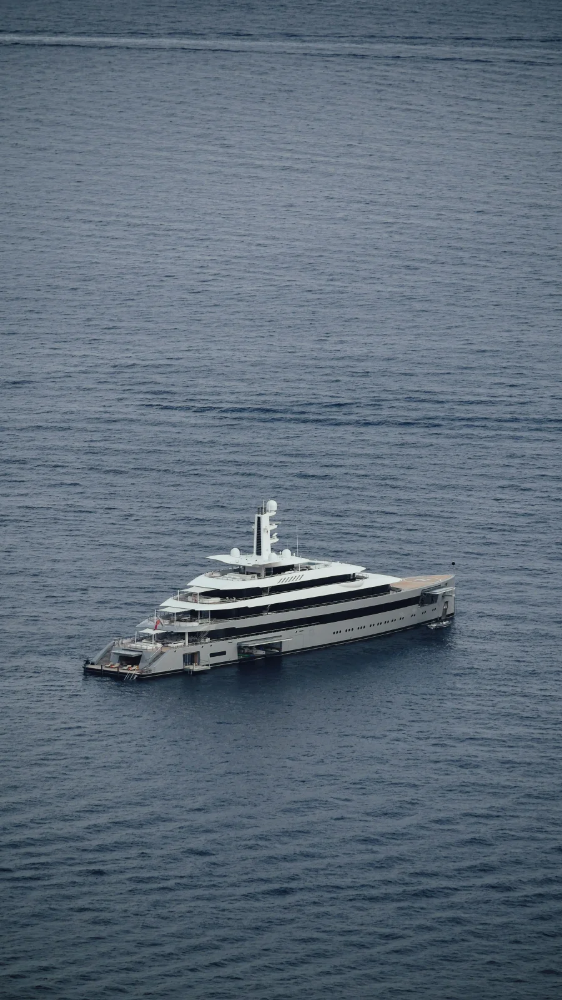
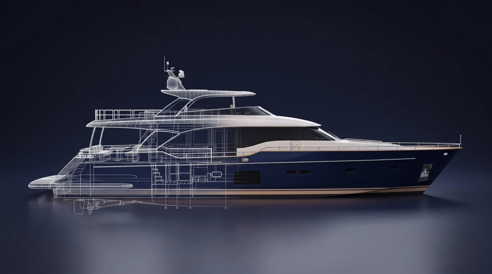
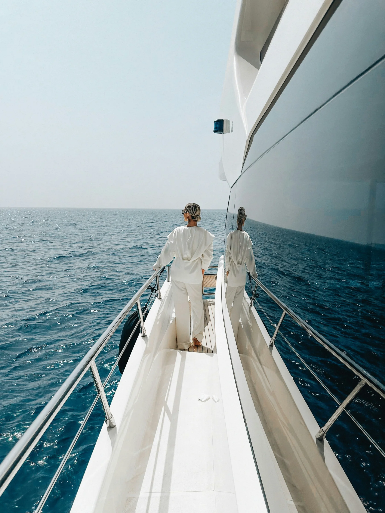
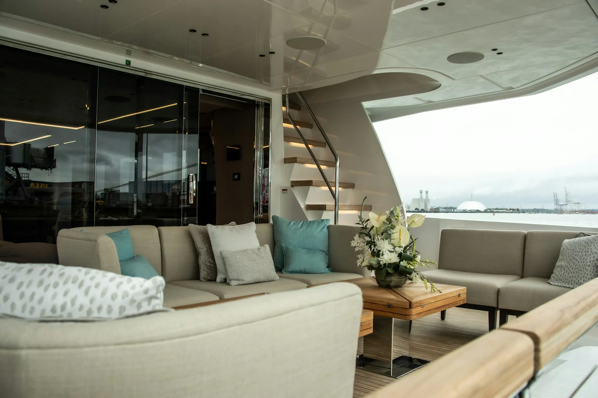
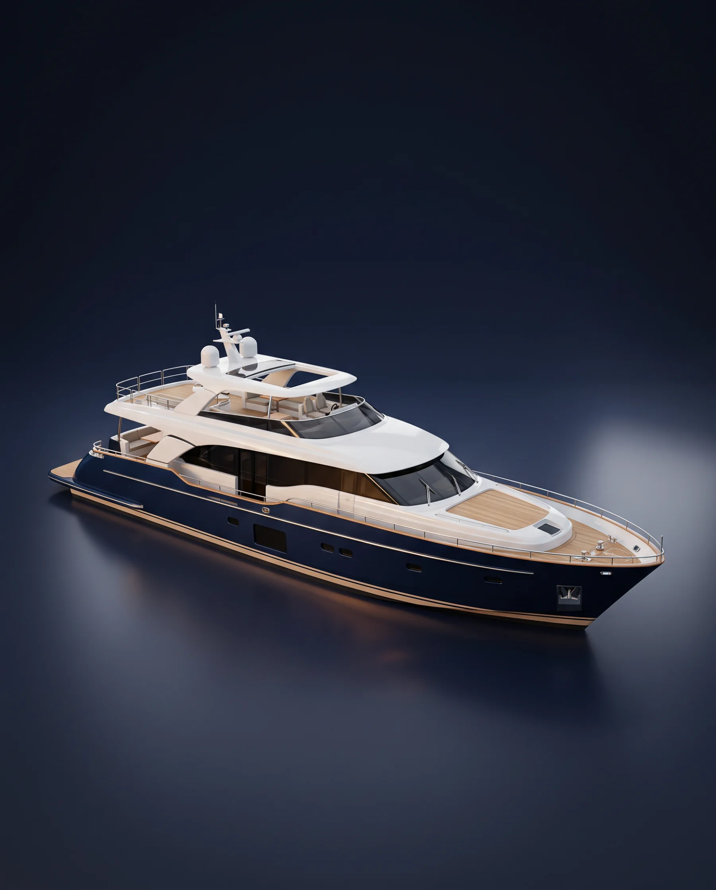
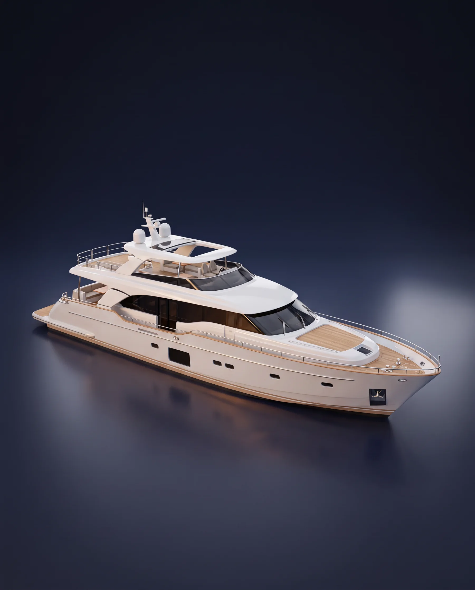
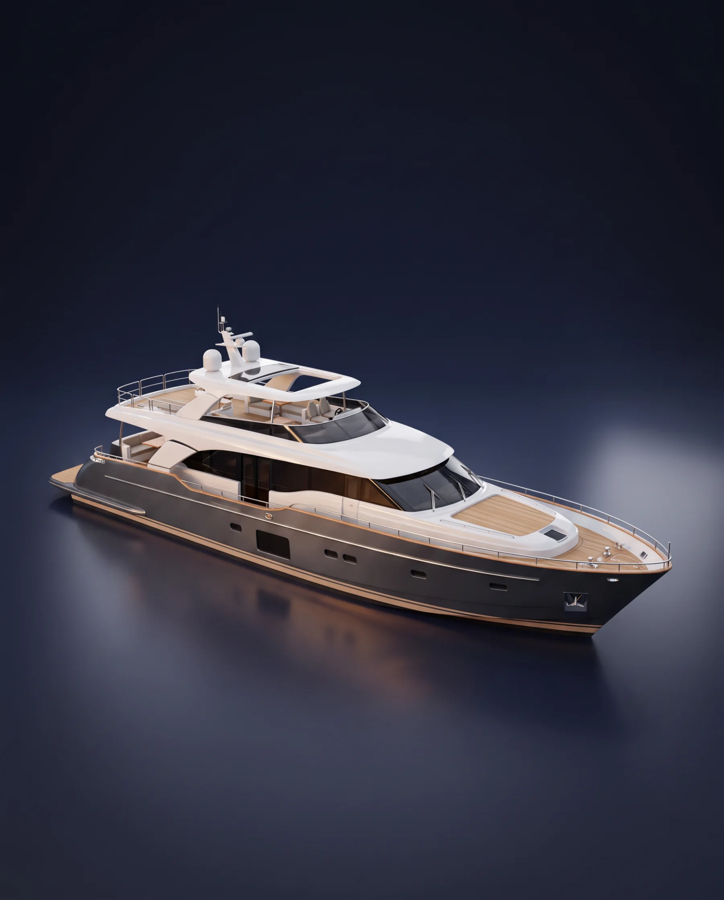
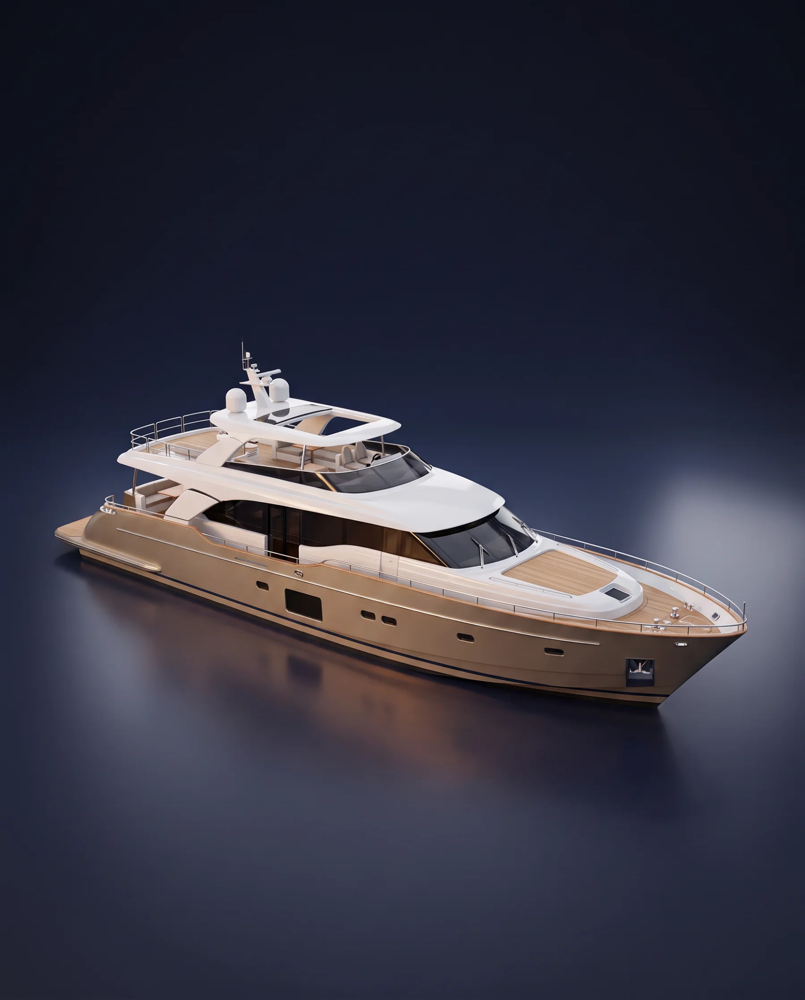
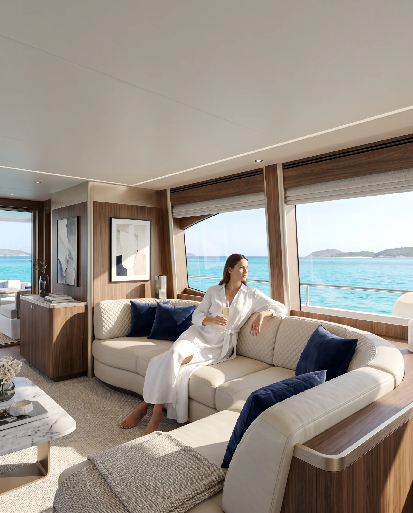
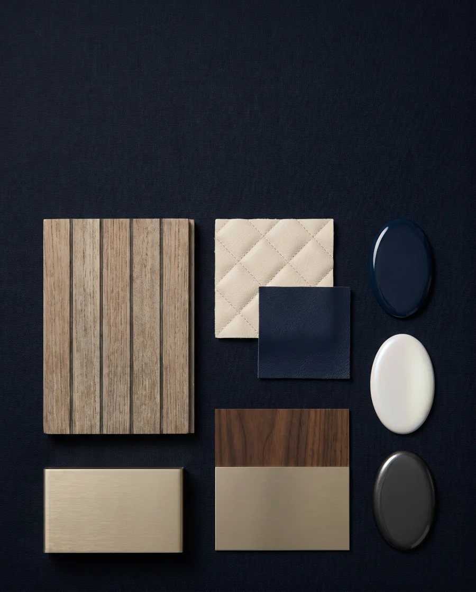

Silente 55
55 m · 2019 · 12 guests
€ 38.5M
We do not advertise yachts. We introduce them, one owner to the next, the way a harbourmaster once did at the end of a pier in Cascais. Quietly, carefully, and only when the sea agrees.
Ask for an introduction


In 1958, harbourmaster Afonso Varela kept a leather ledger in Cascais. Every captain who moored there was written in it. When one wanted to sell, Afonso never advertised. He opened the ledger.

A harbourmaster's notebook becomes a list of owners who trust one man's eye. The first yacht changes hands over a handshake on Pier 3.

His daughter, Inês Varela, opens an office in Monaco. She sails every yacht before she lists it, and turns down one in three.
Harbour stops advertising altogether. Buyers are introduced, never marketed to. The waiting list passes four hundred names.

The ledger is digital. The handshake is not. Four harbours, one rule: we only sell what we would sail ourselves.
Every owner since 1958 is in the ledger. Yours could be next.
Request an introductionSold quietly.
Delivered beautifully.





